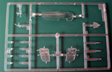

Kit #09738 Collector�s Market Value $31.90
Images and text Copyright � 2007 by Pablo Bauleo
Hasegawa 1/48 P-400/P-39D Airacobra w/Pinup Girl
Kit #09738
Collector�s Market Value $31.90
Images and text Copyright � 2007 by Pablo Bauleo
Developmental Background
In 1937 Bell Aircraft Corporation proposed an innovative design in response to a United States Army Air Corps request for a new fighter. The new aircraft would have its engine behind the cockpit, as close as possible to the aircraft�s center of gravity in an attempt to minimize the torque forces and therefore increase maneuverability. The design won an award and the prototype first flew in 1939, just in time for the P-39 Airacobra to be one of the USAAC frontline fighters at the time of the attack on Pearl Harbor.
The unusual location of the engine allowed the airframe to be streamlined and proved to be extremely aerodynamic. Hadley M. Dixon, WWII veteran and P-39 pilot remembers thinking after he was introduced to the P-39: �Its gender was feminine. Something that pretty just had to be a she.�
One of the main � and most cursed � characteristics of this airplane was the difficulty to recover from a flat spin. Due to the unusual central location of its engine, if the plane were to stall, then its nose wouldn�t go down preventing the usual recovery of airspeed over the wings and surface controls. During training Dixon had an unintended flat spin and managed to recover just a few feet over the sea, barely avoiding a fatal crash. He remembers, �As a result of the spin escapade, my attitude towards the P-39 changed. It was still a sweet piece of machinery but no the longer a toy with which to cavort about the skies. I had learned that I�d better handle her with kid gloves and keep my wits about me if I wanted our relationship to continue.�
But not everything was bad about having the engine behind the cockpit. This did provide some extra armor and allowed the installation of one heavy cannon (37 mm or 20 mm in the export production) in the nose, firing through the propeller hub. It also had a tricycle landing gear making taxing pretty straightforward in comparison with tail-draggers like the contemporaneous P-40.
The P-39 was powered by an inline Allison engine of 1200 hp. With a weight of about 3300 kg and its relatively small wing area, the plane was underpowered and had a sluggish climb rate. Its range was about 1200 km, limiting its use to short-range tactical missions or as a point defense bomber interceptor due to its powerful armament. Its performance was handicapped further by the fact that its engine didn�t have a supercharger, limiting its ceiling to below 5000 meters. Thus it was not an effective bomber interceptor as bombers that could fly higher than the Airacobra.
The Airacobra served with the US Air Corps in North Africa and the Pacific. The RAF bought a few for evaluation, but the P-39's limited range and lack of climb rate meant it was not capable of performing well in the European Theater. The Free French Air Force and the Co-Belligerent Italian Air Force received the airplane for use in the Mediterranean Theater in late 1944 and 1945, when the USAAF didn�t know what to do with them. Some planes were flown by Australia and Portugal as well.
The Airacobra found its niche and excelled on the Eastern Front in the hands of Soviet pilots. The air war on the Eastern Front was tactical by nature and fought at low altitude focusing in close air support; therefore the lack of high altitude performance didn�t matter. The P-39's powerful cannon, together its six machine guns (two nose and four wing mounted) plus the bomb payload and the extra armor provided by the engine behind the pilot meant it was a superb ground attack aircraft and the Soviet pilots couldn�t get their hands on enough of them, who liked the airplane so much that they nicknamed it �Bellochka� (little bell).
Nearly 10,000 P-39's were manufactured, with about half of them sent to the Soviet Union under the Lease-Lend Treaty. Some of the planes were built with Soviet markings, and flown directly from the Bell Aircraft factory in the US through the Alaskan route to the Soviet Union.
The Kit
This kit comes in the classical Hasegawa light gray plastic. There are 9 trees, one of them clear, for a total of 122 pieces. The surface detail is superb with delicately engraved lines, and no flash, no sinks, and no ejector pin marks on the external surfaces. Smart engineering in the molds means that the large ejector pin marks are located in the inside of the model. However there are a few, tiny ejector pin marks in the inner surfaces of the landing gear covers. Nothing that a little bit of Mr. Surfacer and sanding couldn�t fix.
The wing mounted machine gun barrels are hollow (nice detail), but surprisingly the cannon barrel is molded solid and needs to be drilled. Also the exhaust stack is molded solid and drilling them will improve the look of the model. The landing gear is nicely molded, with flattened, weighted tires. Machine gun ejector chutes are provided as plugs to be added to the wings. The chutes are solid, but deep enough that painting them black should suffice.
The cockpit detail is excellent. The car style doors of the P-39, which exposes most of the cockpit, will show most of it. In my opinion there is no need to go and get an aftermarket cockpit. Simply dressing up the seat with photo etched seatbelts will be enough to make an outstanding front office.

You may click on the small images above to view larger pictures.
The transparent parts for the canopy are clear and thin. The doors are molded in clear plastic, avoiding having to fit a window into the doors. The doors have delicate raised detail, and can be posed either open or closed.
Control surfaces and flaps are molded in neutral positions and there is no possibility for repositioning them. The kit only offers two options, to model the P-400 or the P-39D, differentiated by the nose cannon and the exhaust stack. A late P-39 is not possible to be model with this kit out of the box, as the late wing mounted machine guns or late propeller are not provided. (Hasegawa is issuing a P-39Q if you want to build a late P-39).
Markings/Decals
Ah! The Air-A-Cutie markings� �Historically accurate and anatomically unlikely.� �Air-A-Cutie� is arguably the airplane with the most elaborate nose art ever, with two different large nudes on each side of the fuselage extending from the nose, over the doors, and behind the cockpit. It is believed that at least three different airplanes were named �Air-A-Cutie�
with slightly different nose art. Hasegawa offers models of two of them: an early version with olive drab over neutral gray, and a later version which includes white wings� leading edge and white empennage as were standard tactical recognition markings used in the southwest Pacific.
Because the female figures cover both the fuselage and the doors, the decals are provided in two different options, with the legs and arms available to cover the doors as independent decals in case you want to model the airplane with the doors open.
An extensive set of stencils is included, as well as early and mid-war US markings to match either of the camouflage styles. Wing-walks are provided as decals, but they will look better painted on.
Accessories
This kit is so nice �and recent enough� that not many aftermarket sets are out there. Eduard makes flaps and control surface detail sets for it. You can also get many different aftermarket decal sets, including more detailed female figures for Air-A-Cutie from either Aeromaster or PynUp decals.
Conclusion
The surface detail, clever engineering, detailed cockpit and interesting markings (my wife just gave me "that look" after reading this!) make this kit a little gem. I have not dry fitted any parts yet, but I expect the fit to be very good, as is usual in recent Hasegawa releases.
If you know how to cut, glue and paint you cannot go wrong with this kit. If you have a few kits under your belt, you can build an outstanding model out-of-the-box with this kit. I highly recommend it to everyone from beginners to experts.


{kind=link}
{kind=link}
{kind=link}
{kind=link}
{kind=link}
{kind=link}